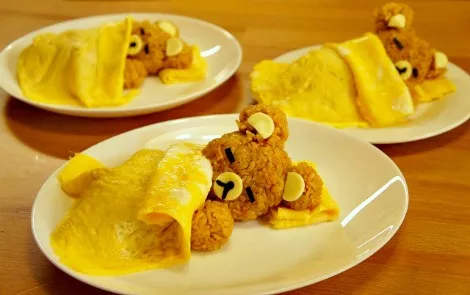

Omurice of Josuke Higashikata

Description
A Japanese comfort food combining a flavorful fried rice mixture with a fluffy omelet. The rice is typically seasoned with ketchup and soy sauce, and the dish is often garnished with additional ketchup, making it a satisfying and kid-friendly meal.
Ingredients
- 2 cups cooked rice
- 1/2 onion, chopped
- 1/2 cup mixed vegetables (carrots, peas, corn)
- 1/2 cup cooked chicken, diced
- 2 tbsp ketchup
- 2 tbsp soy sauce
- 4 eggs
- 2 tbsp milk
- 2 tbsp vegetable oil
- Salt and pepper to taste
Steps
- Heat 1 tbsp of vegetable oil in a large pan over medium heat.
- Add chopped onion and cook until translucent.
- Add mixed vegetables and diced chicken, and cook for 3-4 minutes.
- Stir in cooked rice, ketchup, and soy sauce. Cook for another 2-3 minutes. Season with salt and pepper.
- In a bowl, beat the eggs with milk.
- Heat 1 tbsp of vegetable oil in a separate pan over medium heat.
- Pour half of the beaten eggs into the pan, spreading evenly.
- Cook until the eggs are almost set, then place half of the fried rice mixture in the center of the omelet.
- Fold the edges of the omelet over the rice, then carefully transfer to a plate.
- Repeat with the remaining eggs and rice mixture.
- Serve the omurice hot, optionally garnished with extra ketchup.